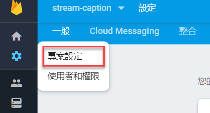
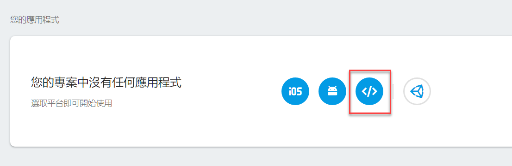
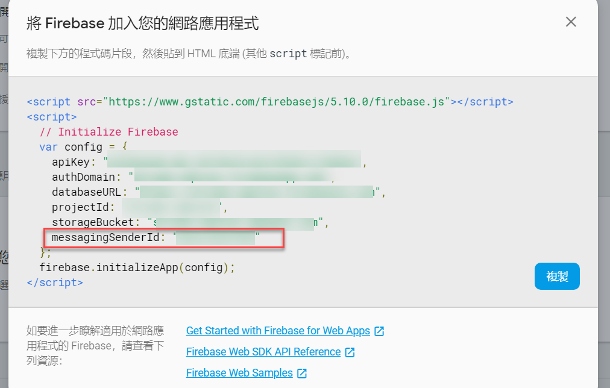
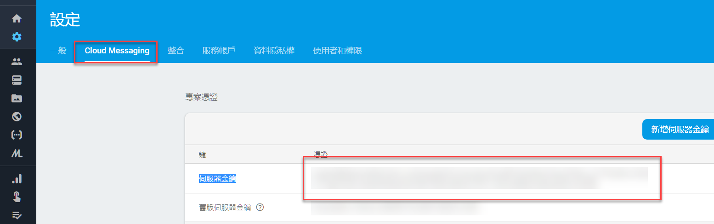
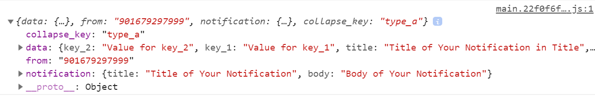

自從 Angular 內建 Service Worker package 與 @angular/pwa 後，寫 PWA 就變得簡單很多了，但是在 Push Notification 的地方，一直找不到好的教學文章講如何與 Firebase Cloud Message 整合在一起，大多數找到的文章都是直接使用 firebase.js 所提供的方法做操作，這樣子就浪費了內建的 SwPush 的功能了，而這篇文章就是講如何將兩者整合再一起
基本環境套件安裝
首先，先建立一個新的專案並將 PWA 的功能設定起來
ng new ngpwa- 進入
ngpwa專案資料夾後，執行ng add @angular/pwa，將 PWA 加入到 Angular 專案內 - 安裝
firebase，npm install firebase
完成上述 3 個步驟，就已將完成安裝所需的套件了，接下來要開始設定 push notification 的部分，但這之前，我們要先將自動更新 service worker 的功能加上去，在 app.module.ts 的地方加上這幾行程式碼
1 | export class AppModule { |
以上的程式碼，可以 service worker (以下簡稱 SW) 自動檢查是否有新版本的程式，如果有就更新 cache 在 SW 內的程式，相關的介紹可以參考這篇 [Angular] Service Worker Update
設定推播訊息所需的參數
-
在
manifest.json內，要加上一行參數，這是固定的，直接複製貼上到自己的manifest.json內即可1
"gcm_sender_id": "103953800507"
-
從 firebase 專案的地方，可以取得
messagingSenderId，相關位置請參考下圖，將該 id 記錄在environement變數檔內


到這邊，我們已經取得所需的設定參數了
設定 push notification
Angular 內建的 SwPush 有實作與 Push Notifications 相關的方法，包含註冊訂閱，監聽訊息，處理訊息動作後續的行為等，在本次文章，會先著重於如何將 SwPush 與 Cloud Messaging 整合在一起。
在網路上面可以搜尋到的文章，都是講利用 firebase.messaging 的功能來監聽推播訊息，但這樣子就不能使用 SwPush 與必須要自己另外寫一個處理推播訊息的 SW，所以接下的程式碼，就是讓 firebase.messaging 的後續動作，交給 SwPush 來處理，先看程式碼
1 | import { Component, OnInit } from '@angular/core'; |
- line 3, 4: import firebase/app 與 messaging 相關功能
- line 13: 注入 SwPush 服務
- line 15: 由於 SW 註冊的順序性，必須在
ngOnInit的地方撰寫註冊messaging的功能。 - line 16 ~ 17: 初始化
firebase物件 - line 19: 建立
firebase.messaging服務 - line 20: 判斷監聽瀏覽器 SW 是否已經準備完成，相關說明請參閱 MDN
- line 21~ 26: 判斷 SW 是否已經準備好可以使用
- line 27: 告訴
firebase.messaging服務，之後的訊息請交由此 SW 處理 - line 28 ~ 31: 請求權限並取得 token，這 token 要存起來，後端要發訊息到前端時，需要這個 token，這個 token 在每一次 SW 註冊時都會改變
- line 39~41: 利用
SwPush監聽推播訊息
以上的幾行程式碼，就是將 firebase.messaging 的功能，改用 SwPush 來處理，因為 Angular PWA 只有在 production 模式下才會啟動，要測試是否成功，必須使用 --prod 來切換成 production 模式，所以建議使用 ng build --prod 後，再利用 lite-server 的方式將網站開啟，當網頁開啟後，第一次會被詢問是否允許開啟通知功能，點選允許，後續才可以接受到通知訊息
接下來再打開 F12 開發者工具並切換到 console 下，應可以看到 Permission granted! xxxxxxxxxxxxx 的訊息，而後面的那一串就是本次 SW 註冊後跟 FCM 取得 client token (先記起來，下面測試時用的到)
至於要怎麼測試有設定成功，以下提供一個簡單的測試方式
利用 Postman 來做 Push Notification 的測試
-
打開
Postman，並建立一個新的Post請求 -
網址輸入:
https://fcm.googleapis.com/fcm/send -
Header的地方需要新增兩項-
"Content-Type" : "application/json" -
`「Authorization」 : 「key=<伺服器金鑰>」，伺服器金鑰取得的位置

-
-
Body 的內容
1
2
3
4
5
6
7
8
9
10
11
12
13
14{
"to" : "YOUR_FCM_TOKEN_WILL_BE_HERE", // 剛剛在 SW 註冊時，取得的 Client Token
"collapse_key" : "type_a",
"notification" : {
"body" : "Body of Your Notification",
"title": "Title of Your Notification"
},
"data" : {
"body" : "Body of Your Notification in Data",
"title": "Title of Your Notification in Title",
"key_1" : "Value for key_1",
"key_2" : "Value for key_2"
}
} -
按下送出，如果有正常的送出，不論寄送成功失敗，在 postman 都會看到這個 response 的訊息
1
2
3
4
5
6
7
8
9
10
11{
"multicast_id": 6098520606839994749,
"success": 1,
"failure": 0,
"canonical_ids": 0,
"results": [
{
"message_id": "0:1555764770224963%e609af1cf9fd7ecd"
}
]
} -
瀏覽器開發者工具的 Console 裡會看到，作業系統也會收到通知訊息

以上就是利用 postman 進行 Push Notifications 測試的方法
總結
網頁的 Push Notifications 可以做到很多事情，這留在後面再來研究，但至少利用 @angular/pwa 加上 SwPush 與 Firebase Cloud Messaging 的串接，可以少寫很多程式碼了。在此分享給各位